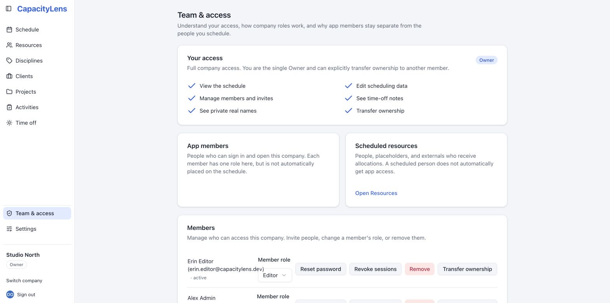

Roles and permissions
CapacityLens has four roles, strictly nested: Viewer < Editor < Admin < Owner. Every member gets the same navigation — a role changes what's editable and visible inside each page, and that's enforced on the server, not just hidden in the interface. This page explains what each role can do and clears up a common point of confusion: the difference between having a sign-in, being a member of a company, and being on the schedule.
The three kinds of "person"
CapacityLens keeps three things separate that can all look like "a person" in the interface:
- A sign-in identity — the email and password (or company login) someone uses to reach CapacityLens at all. One identity can belong to several companies.
- A member — a sign-in identity's role in one specific company, created by inviting them. This controls what they can see and do in that company.
- A person on the schedule — a schedulable resource that can receive allocations and time off. Adding a person doesn't give them a sign-in, and inviting a member doesn't put them on the schedule.
Most agencies end up with a few members and many people: you schedule freelancers and contractors without ever creating a sign-in for them. See the glossary for precise definitions of these and other terms used throughout these docs.
Roles in one table
| Capability | Viewer | Editor | Admin | Owner |
|---|---|---|---|---|
| See the schedule | Yes | Yes | Yes | Yes |
| Create and edit scheduling data | — | Yes | Yes | Yes |
| Change ordinary company settings | — | Yes | Yes | Yes |
| See time-off notes | — | — | Yes | Yes |
| See private client/project real names | — | — | — | Yes |
| List members and manage invites | — | — | Yes | Yes |
| Export the schedule | Redacted | Redacted | Full | Full |
| Import, delete the company, transfer ownership | — | — | — | Yes |
There is exactly one Owner per company, and Owner can't be assigned through an invite or an ordinary role change — only through an explicit ownership transfer to an existing member. An Admin can invite, remove or change the role of any other member, but can't touch the Owner. If a company somehow ends up with no Owner at all, see A company has no Owner — CapacityLens repairs that automatically in almost every case.

Details
Export. An export is redacted the same way the screen is:
| What the export contains | Viewer / Editor | Admin | Owner |
|---|---|---|---|
| Archived and deleted rows | Left out | Included | Included |
| Private client/project names | Code names | Code names | Real names |
So an Admin's export holds the full set of rows, but only an Owner's export contains the real private client and project names.
Offline snapshots. Offline access always behaves like a Viewer, no matter your real role — while a cached snapshot is shown, creating, editing, deleting, importing and changing membership are all unavailable for everyone. The snapshot reflects whatever that person could see the last time they were online: a non-owner's snapshot uses code names, while an owner's may contain real private names — so protect an owner's device accordingly.
What's next
You've now covered sign-in, installing, first steps, invites and roles. Head to The schedule to start building out your team's week.